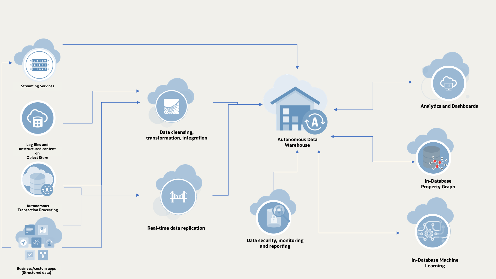

Autonomous Data Warehouse
Use Case Patterns
Oracle Autonomous Data Warehouse is Oracle's new, fully managed database tuned and optimized for data warehouse workloads with the market-leading performance of Oracle Database. It delivers a completely new, comprehensive cloud experience for data warehousing that is easy, fast, and elastic.
Data Warehouse Use Case Patterns

Pattern for a modern data warehouse
Stage 1 - CREATE
Oracle Object Store

The Oracle Cloud Infrastructure Object Storage service is an internet-scale, high-performance storage platform that offers reliable and cost-efficient data durability. The Object Storage service can store an unlimited amount of unstructured data of any content type, including analytic data and rich content, like images and videos.
Object Storage is a regional service and is not tied to any specific compute instance. You can access data from anywhere inside or outside the context of the Oracle Cloud Infrastructure, as long you have internet connectivity and can access one of the Object Storage endpoints. Authorization and resource limits are discussed later in this topic.
Get more information...
- For a general overview of Oracle Object Store - click here
- Learn how to setup and configure your Object Store - click here
- Learn more about Object Store resources - click here
Oracle Streaming Service
The Oracle Cloud Infrastructure Streaming service provides a fully managed, scalable, and durable storage solution for ingesting continuous, high-volume streams of data that you can consume and process in real time. Streaming can be used for messaging, ingesting high-volume data such as application logs, operational telemetry, web click-stream data, or other use cases in which data is produced and processed continually and sequentially in a publish-subscribe messaging model.
Get more information...
- For a general overview of Oracle Streaming Service - click here
- Learn how to setup and configure your Oracle Cloud Streaming service - click here
- For instructions on how to manage streams - click here
- For information about publishing messages to a stream - click here
- For information on how to consume messages - click here
- Learn more about migrating your Kafka Workloads to Oracle Cloud Streaming - click here
Stage 2 - INGEST
Oracle Data Integrator

Oracle Data Integrator provides a fully unified solution for building, deploying, and managing complex data warehouses or as part of data-centric architectures in a SOA or business intelligence environment. In addition, it combines all the elements of data integration—data movement, data synchronization, data quality, data management, and data services—to ensure that information is timely, accurate, and consistent across complex systems.
ODI via the Cloud Marketplace is free to use with Autonomous Data Warehouse as the target. You only pay for the hardware resources required to run the ODI image from Oracle Marketplace.
Get more information...
- For a general overview of Oracle Data Integrator - click here
- To download and configure ODI using Cloud Marketplace - click here
- For guided tutorials for ODI - click here
- For information about how to setup an integration project - click here
- For information on how to consume messages - click here
- Learn more about migrating your Kafka Workloads to Oracle Cloud Streaming - click here
GoldenGate Cloud

Oracle GoldenGate is a comprehensive software package for real-time data integration and replication in heterogeneous IT environments. The product set enables high availability solutions, real-time data integration, transactional change data capture, data replication, transformations, and verification between operational and analytical enterprise systems.
When you create an Oracle GoldenGate Cloud Service instance, the necessary compute infrastructure such as virtual machines and storage volumes is set up for you.
As soon as you provision your Oracle GoldenGate Cloud Service account, you can access all features immediately and start preparing your data for replication. You don't need to set up a local environment.
Get more information...
- For a general overview of GoldenGate Cloud - click here
- For more information about the key components of GoldenGate Cloud - click here
- For more information about replicating data to ADW - click here
Stage 3 - STORE
Autonomous Data Warehouse
Oracle Autonomous Data Warehouse provides an easy-to-use, fully autonomous database that scales elastically, delivers fast query performance and requires no database administration.
Fully-managed cloud service that makes it very simple to provision a data warehouse, quickly and easily load data and query that data using built-in web-based tools such as notebooks.
Get more information...
- Watch this video to hosted by Oracle SVP Çetin Özbütün to get an overview of Oracle Autonomous Data Warehouse and understand how it offers automated "load and go" management and tuning, high performance, and instant elasticity, click here
- Learn more about what is an Autonomous Data Warehouse, click here
- Watch this tutorial to learn more about getting started and provisioning your first Autonomous Data Warehouse click here
Stage 4 - SECURE
Data Safe
Oracle Data Safe helps organizations to accelerate Cloud adoption, achieve data privacy and compliance by discovering, classifying, and masking sensitive data. It also helps them establish IT internal controls for their database infrastructure in the cloud. Audit information is consolidated from multiple sources and alerts/reports are generated to meet security and regulatory requirements.
Get more information...
- For a general overview of Data Safe - click here
- To learn how to enable Oracle Data Safe in a region of your tenancy - click here
- For more information about the key concepts and terminology - click here
- For more information about registering ADW with Data Safe - click here
Stage 5 - TRAIN-DISCOVER
Machine Learning Notebook
Oracle Machine Learning is a SQL notebook interface for data scientists to perform machine learning in the Oracle Autonomous Data Warehouse (ADW). Notebook technologies support the creation of scripts while supporting the documentation of assumptions, approaches and rationale to increase data science team productivity.
Oracle Machine Learning SQL notebooks, based on Apache Zeppelin technology, enable teams to collaborate to build, evaluate and deploy predictive models and analytical methodologies in the Oracle ADW.
Get more information...
- For more information on getting started with Machine Learning SQL notebooks - click here
- For more information about the machine learning example templates - click here
- For more information about data analysis and data visualization with OML - click here
Oracle Advanced Analytics
Oracle machine learning moves the algorithms to the data, processing data where it resides—minimizing or eliminating data movement, achieving scalability, preserving security, and accelerating time-to-model deployment. Oracle delivers high performance, parallelized in-database implementations of machine learning algorithms and integration.
Get more information...
- For more information on getting started with machine learning - click here
- For more information about the basics of machine learning - click here
- For more information about in-database scoring - click here
Stage 6 - VISUALIZE
Oracle Analytics Desktop

Oracle Analytics Desktop provides standalone data exploration and visualization in a per-user desktop download. Oracle Analytics Desktop is the tool for quick exploration of sample data from multiple sources or for analyses and investigation of your own local data sets.
Oracle Analytics Desktop enables you to visualize your data so you can focus on exploring data patterns. Just upload data files or connect to Oracle Applications or a database, select the elements that you’re interested in, and let Oracle Analytics Desktop find the best way to visualize it. Choose from a variety of visualizations to look at data in a specific way.
Get more information...
- For more information on getting started with Analytics Desktop - click here
- For more information about connecting ADW to Analytics Desktop - click here
- For more information about exploring and visualizing your data - click here
Oracle Analytics Cloud

Oracle Database is able to efficiently leverage all hardware resources - multiple CPUs, multiple IO channels, multiple storage units, multiple nodes in a cluster. The Oracle Optimizer can automatically decide if a query should run in parallel and the degree of parallelism to use based on the resource requirements of the statement.
Get more information...
- For more information on getting started with Analytics Cloud - click here
- For more information about connecting ADW to Analytics Cloud - click here
- For more information about exploring and visualizing your data - click here
Oracle Big Data Warehousing Blog
19c Documentation For Data Warehousing
- Database Data Warehousing Guide
- Database Performance Tuning Guide
- Database Utilities
- SQL Tuning Guide
- VLDB and Partitioning Guide
- Data Mining Concepts
- Data Mining User's Guide
- Oracle R Enterprise User's Guide
Documentation Sets For Data Warehousing
- 19c Data Warehouse Documentation set
- 18c Data Warehouse Documentation set
- 12c Release 2 Data Warehouse Documentation set
Documentation For Autonomous Data Warehousing
New Videos For Data Warehouse Customers
New Customer Videos are available to support your sales effort for Oracle Autonomous Data Warehouse Cloud. Watch the videos and use them to initiate customer conversations on Autonomous Data Warehouse Cloud.
- Sensa Analytics - Easy, Fast and Elastic Autonomous Data Warehouse Cloud Experience
- Sensa Analytics - Eliminating Manual Operations with Autonomous Data Warehouse Cloud
- Hertz - Analytics in Autonomous Data Warehouse Cloud
- Hertz – Transitioning to Autonomous Data Warehouse Cloud
- DX Marketing – Advanced Analytics in Autonomous Data Warehouse Cloud
- Vlamis - Analytics in Oracle Autonomous Data Warehouse Cloud
- Vlamis - Scaling Analytics in Oracle Autonomous Data Warehouse Cloud
- Minnesota State Colleges and Universities – Easy, Fast and Elastic Autonomous Data Warehouse Cloud
- QMP Health - Delivering better customer service in Autonomous Data Warehouse Cloud